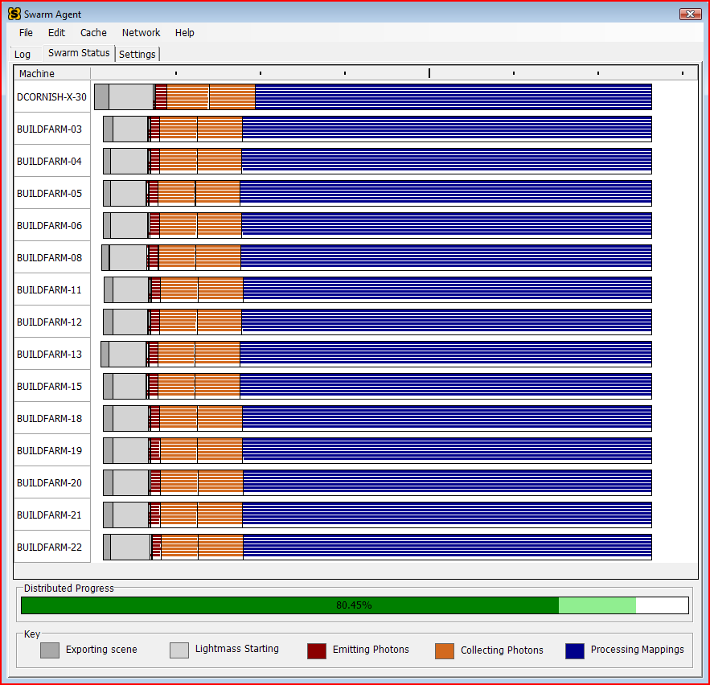
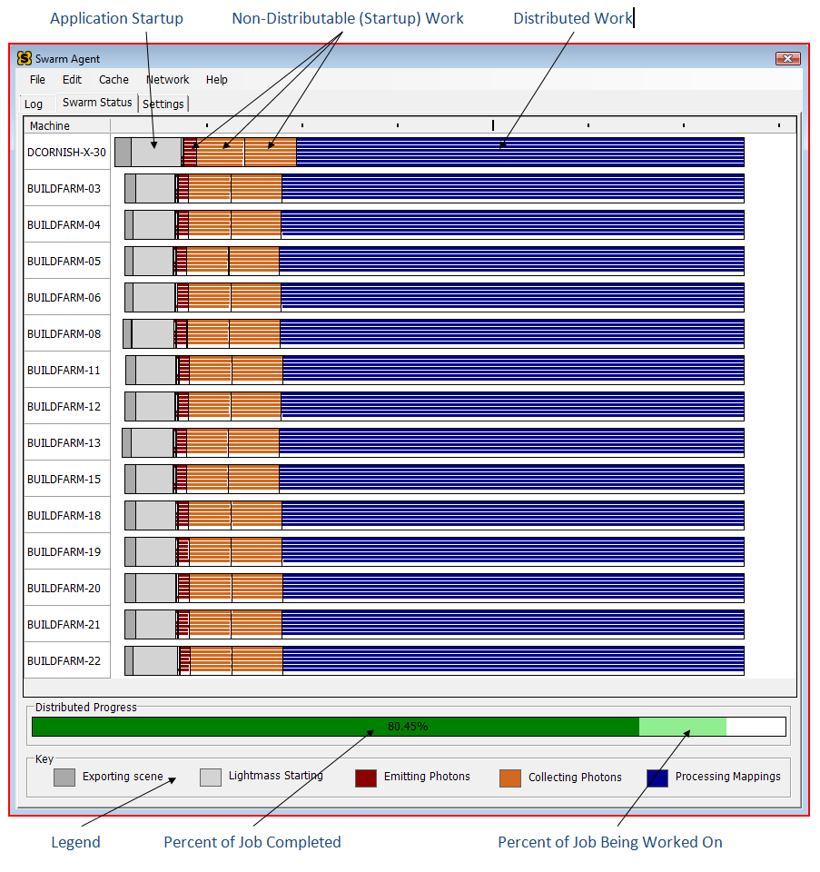

UDN
Search public documentation:
SwarmCH
English Translation
日本語訳
한국어
Interested in the Unreal Engine?
Visit the Unreal Technology site.
Looking for jobs and company info?
Check out the Epic games site.
Questions about support via UDN?
Contact the UDN Staff
日本語訳
한국어
Interested in the Unreal Engine?
Visit the Unreal Technology site.
Looking for jobs and company info?
Check out the Epic games site.
Questions about support via UDN?
Contact the UDN Staff
Unreal Swarm -虚幻引擎3的大应用程序的分布式计算系统
文档概要:关于Unreal Swarm的高层次的概述，它是一个综合的应用程序及任务分布式系统。 文档概要:由Derek Cornish创建。目标读者
这个文档是为那些对该系统的高层次设计感兴趣的人及一般用户而设计的，包括关卡设计人员和美术工作人员。对于开发人员和那些配置Swarm的人，请查看Swarm的设立和开发。Unreal Swarm是什么？
需求应用程序的设计通常是为了充分利用您系统可以收集的任何处理能力，使性能和额外的处理器完美地成比例提高。这也是处理器从双核到四核或从四核到8核发展的原因，它对于这些应用程序有着难以置信的作用。Unreal Lightmass,我们的高质量静态全局光照的解决方案，它是这些应用程序之一，因为它有大量的计算需要。尽管在8核的系统中，为大的或复杂的关卡重新构建光照都要占用迭代性能可以承受的足够的时间。进入Unreal Swarm。
Swarm是一个多应用程序分布式系统，它传播像Lightmass这样的应用程序到您的整个网络中，充分利用运行Swarm Agent的所有机器的处理能力。您可以把Swarm所做的事情看做是它正在创建一个虚拟的具有100个处理器的系统来让Lightmass在其上面运行。Lightmass的可以按并行方式执行的部分计算可以被分布到整个网络中可用的系统上进行处理，从而使性能提高很多倍，把需要消耗很长时间的工作比如全局光照带入到了曾经认为不可能实现的迭代开发领域。使用Swarm
在大多数情况下，Swarm会自动启动，执行它的任务，并可以在没有任何用户干涉的情况下关闭。当您在进行一次Lightmass光照构建时，编辑器会随时地自动启动，并且Swarm Agent将跟踪是哪个编辑器启动了它，一旦编辑器关闭它将会自动关闭。应用程序中的默认设置是由您的Swarm管理员进行的，如果您有任何超出FAQ和这个页面其它文档的问题，请向他们寻求进一步的帮助。 尽管Swarm的设计目标是使它变得安静的不需要干涉的，但仍然会有一些异常。所以请查看FAQ。Swarm 常见问答
为什么我的程序没有进行分布式处理？
Remote Swarm Agents(远程Swarm代理)由于几个不同的原因可能会拒绝为您工作，其中一个最常见的原因是它们正忙于为其它人工作。另一个可能是它们那时太忙以至于不能承担那个工作，通常是由于机器正在进行其它的占用资源比较多的事情，比如编译或烘焙。在Agent窗口的Swarm Status(Swarm状态) 标签中，您应该会看到可能帮助您进行编译的所有远程代理的列表。如果它们其中一个当前不能使用，您会看到正在跟踪记录剩余的编译任务的白色长条，如果您把鼠标放到长条的上面您将会看到"请等待远程代理变为可用状态"。
当然，用于查看可用远程代理的一个更高级的即使在没有进行编译时也可以使用的办法是点击 Log(日志) 标签并从=Network(网络)= 选择 Ping Remote Agents(Ping远程代理) 项，您将会看到远程代理机器列表及它们的当前状态。
如何启动和停止Swarm Agent？
如果Agent(代理)没有准备好运行，当您在编辑器中进行一次Lightmass光照构建时它将会自动地启动。如果编辑器以这种方式启动Agent(代理)，Agent(代理)将会在它上面保持一个标签，当编辑器关闭时它也会自动关闭。否则，Agent(代理)在任何时候都会持续运行并准备好来管理工作。 请记住当Agent(代理)正在运行时，如果您在Agent(代理)窗口中点击了’X’键，它将仅仅隐藏窗口(我们想使它保持继续运行)。然而代理的盘状图标仍然存在，并且您可以双击它来使窗口重新出现。如果您想手动地关闭Agent(代理)，或者从Agent(代理)菜单中选择"File(文件)" -> "Exit(退出)"，或者右击盘状图标并选择"Exit(退出)"。不要忘记如果Agent(代理)从编辑器中自动启动，它将会在您退出编辑器时自动关闭。如果您手动地关闭了Agent(代理)，请不要到担心，当您进行下一次Lightmass光照构建时，它将会再次启动。在Visualizer(可视窗口)中的长条的意思？
对于每一个为您的光照构建工作的机器，包括您自己的机器，都会显示一组长条来暗示构建的状态和过程。每个机器或许有多个同时执行的线程，这可以通过每个机器的多个水平线来暗示。在窗口的底部提供了一个图列来描述了各种颜色的意义，您也可以通过将鼠标放到长条的上方来获取更多的信息。
Swarm Agent Settings(Swarm代理设置)
- CacheFolder(缓存文件夹)
- Agent(代理)的本地缓存文件夹的位置，这个必须放置在一个具有足够空余空间的运行速度较快的磁盘上。
- MaximumCacheSize(最大缓存大小)
- 缓存占有磁盘的最大量，以G字节为单位，缓存定期维护将努力保持缓存的磁盘占有量。
- MaximumJobsToKeep(要保持的工作最大数量)
- 在任何时候都要保持的工作的最大数量，这些工作包括所有的日志文件、二进制文件和输出文件。
- ShowDeveloperMenu(显示开发者菜单)
- 在Agent(代理)中启用
DeveloperSettings(开发者设置)标签。推荐该功能仅开发人员和QA使用。 - AvoidLocalExecution(避免本地执行)
- 设置这项为 True(真) 将会导致Agent(代理)将尝试将任务 仅 分配到远程机器上，如果可能则尽量避免本地执行。如果没有远程机器，它将会在本地执行任务直到有可以提供帮助的远程机器为止。
- EnableStandaloneMode(启用独立运行模式)
- 防止将工作分发到远程机器上，强制仅在本地执行。
- BringToFront
- 如果为 True(真) ，当一个工作启动了Agent(代理)窗口时，将把它带到前面，并且选中
Visualizer(可视化窗口)标签。 - TextFont (字体)
- 在Agent(代理)窗口的标签(比如
Log,Visualizer, 和=Settings= s)中所使用的字体。 - Verbosity(详情)
- 输出到
Log标签的信息的详情级别。
Swarm Agent Logging(Swarm代理日志)
默认情况下，Agent(代理)所做的任何事情都会被记录到位于 CacheFolder 文件夹中的Logs(日志)文件夹中的一个文件中。一个新的日志在每个工作的结束或开始时创建，所以日志会进行一些逻辑分离。Agent(代理)的Log(日志) 标签的默认日志级别是 Informative(信息级别) 。在磁盘上的日志文件的默认日志级别是 ExtraVerbose(非常详细) 级别